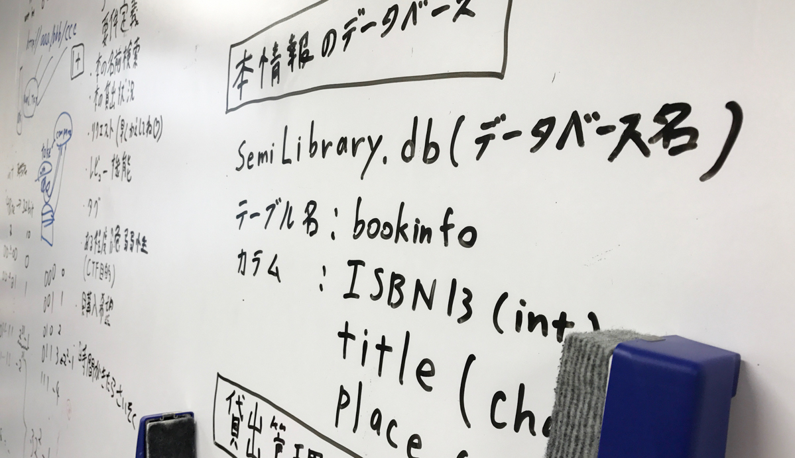

2017.5.28
第2回ICTプログラミングコンテスト dwango賞受賞

中田恭平さん代表のチームが、第2回 ICTプログラミングコンテスト において、dwango賞を受賞しました。 このコンテストは、次世代ICT界を担う若手技術者を主とする人材の発掘と育成を目指し、情報通信技術を学ぶ学生を対象とするプログラミング競技会で、サーバやネットワークといったインフラシステムの構築運用技術だけではなく、独創性と創造力、そして実装力が競われる大会です。 中田さんのチームは、書類審査の予選を経て本選出場の4チームに選ばれ、本選でのプレゼンテーションと作品のデモンストレーションにおいて、プログラミング力，技術力に加え芸術性やエンタテインメント性などが高く評価されました。